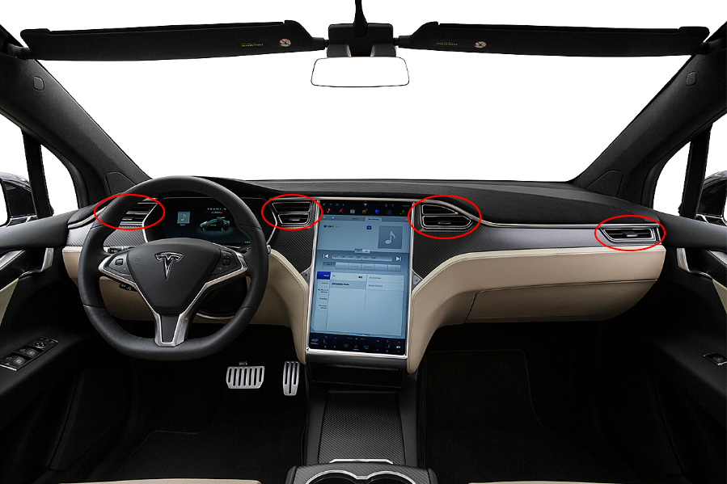
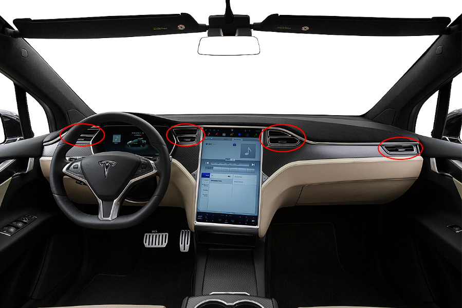

[June - August 2016]
 

I was a Product Excellence Intern at Tesla, an electric car manufacturer. My division was Interiors, who deals with everything on the interior of the car: dashboard, seats, car lining, etc.
In Product Excellence, my main role was to perform root cause analysis on any recurring problem on the assembly line.
Any issues found during assembly of the cars are logged into an internal system where my team can view them, along with any trends and the frequency of each complication. A small detail can lead directly to a cause. Was it only during the night shift? At a particular station? Were different parts currently being phased in, accounting for some learning curve?
One major problem I solved during my internship involved the dashboard air vents of the Model X (see right). During final inspections, these vents were jamming and created a rattling noise in drive tests.
To find the root cause, I began by observing the installation on the manufacturing line and inspecting the vent components sent by our suppliers. On 30 random Model X's, I compiled data on gap tolerances, force efforts, and a percentage of defective parts. Through this, I found that a panel in most of the air vents was not aligning properly which created the clicking noise. Additionally, after observing the installation process in the assembly line, I also found that incorrect installation techniques were being used on the assembly line, which likely exacerbated the complications caused by the defects.
This created two opportunities for improvement.
On the supplier side, I set up a meeting to present my findings and discuss quality of parts and manufacturing. However, because supplier improvements can take weeks to take effect, I created a temporary countermeasure in the meantime that was implemented on the production floor.
To fix the errors in installation, I rewrote the work instructions in greater detail to decrease chance of error. I reviewed them with the assembly workers, who were tasked to pass along the instructions to the night shift.
Within 3 days of instating countermeasures and retraining assembly workers, the rate of error decreased by 50%. When reworked parts were introduced, the rate fell to 0-1%, which is within the acceptable range.